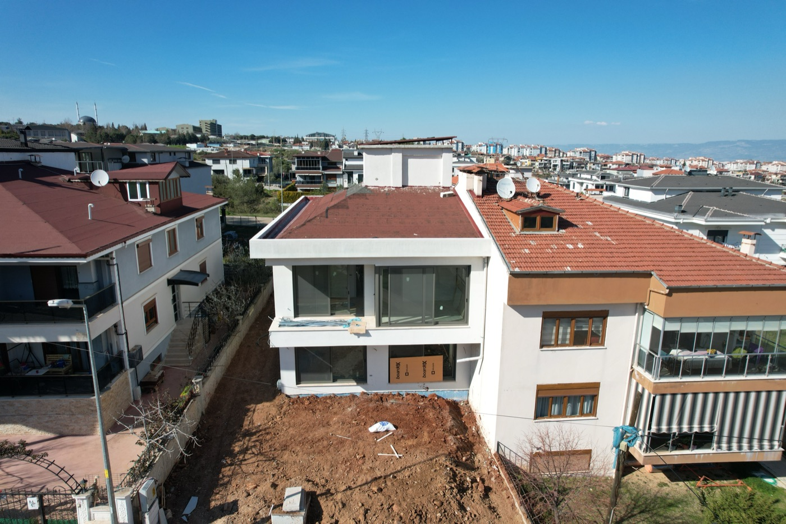

Giriş ve yaşam alanları
Giriş holünde dresuar tasarımıyla bütünleşen gizli kapılı vestiyer kurgulandı. Hol ve salon arasındaki geçiş, özel üretim separatörlerle yumuşatıldı.

Villa / İç Mimari & Uygulama
Dört katlı özel yapıda modern estetik, kullanıcı deneyimi ve fonksiyonel uygulama kararlarının bir araya geldiği villa projesi.
Proje Galerisi
B² Mimarlık olarak, modern estetiği yenilikçi çözümlerle buluşturduğumuz Şirinköy Villa projemizde kullanıcı deneyimini, şıklığı ve fonksiyonelliği merkeze alan bir yaşam alanı tasarladık. Dört katlı bu özel yapının her metrekaresinde, sakinlerine benzersiz bir konfor sunmayı hedefledik.
Giriş holünden salona, mutfaktan ebeveyn süitine kadar her alan; görünmeyen depolama, özel üretim mobilya kararları, doğru tesisat planlaması ve güçlü malzeme diliyle bütüncül şekilde ele alındı.
Giriş holünde dresuar tasarımıyla bütünleşen gizli kapılı vestiyer kurgulandı. Hol ve salon arasındaki geçiş, özel üretim separatörlerle yumuşatıldı.
Geniş ada ünitesi, U plan, gizli ankastre sistemler ve mini evyeli kahve köşesiyle mutfak; kullanım kolaylığını estetikle birleştiren merkez alan olarak tasarlandı.
Villanın dikey dolaşımında tüm basamaklar özel ahşap kaplama uygulamalarıyla ele alındı; merdiven boşlukları da tasarımın parçası haline getirildi.
Çocuk odaları, ebeveyn süiti, en-suite banyolar, niş çözümleri ve kapısız cam duş geçişleri kullanıcıya özel konfor anlayışıyla planlandı.
Ortaya Çıkan Yaklaşım
Şirinköy Villa projesinde, görünen tasarım kararlarının arkasındaki teknik altyapı ve ince işçilik aynı titizlikle yönetildi. Her detay, uzun ömürlü kullanım ve kişisel konfor hedefiyle projelendirildi.